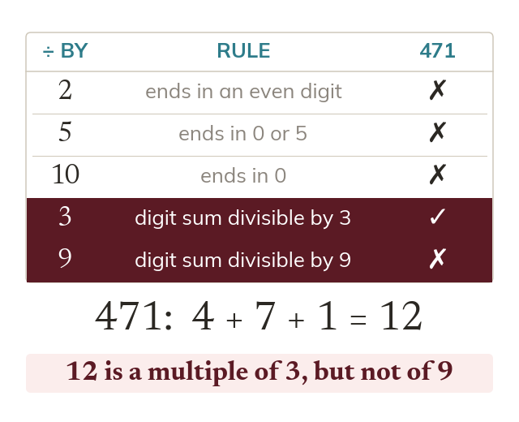
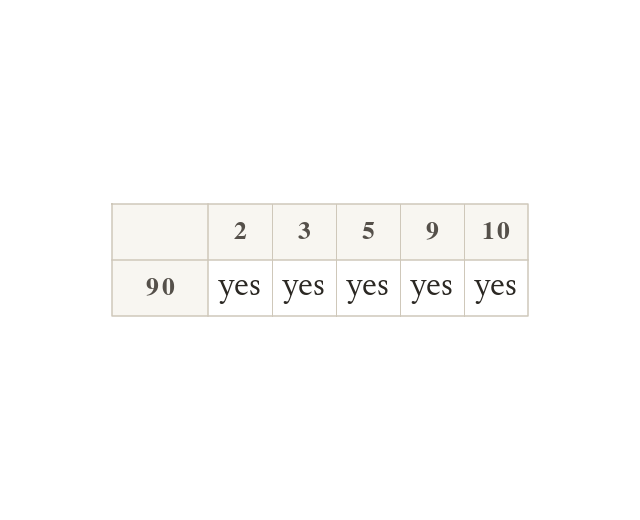
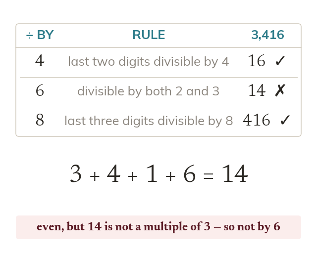
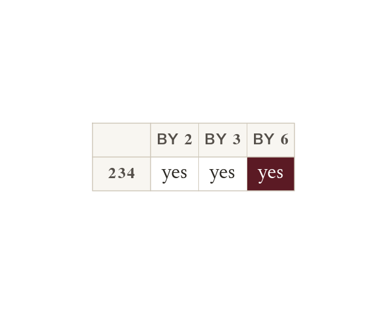

Checking whether a huge number divides exactly by testing every possibility would take forever - divisibility rules let you spot the answer in seconds, just by looking at the digits. Today adds three more rules to the five you already use so you can check every single-digit divisor except without doing a single division.
By the end you’ll know…
Divisible means dividing exactly, with no remainder, so 'divisible by n' and 'has n as a factor' mean the same.
By : the last digit is even.
By : the last two digits form a multiple of
By : the last three digits form a multiple of
By : the last digit is or
By : the last digit is
By : the digits add to a multiple of
By : the digits add to a multiple of
By : divisible by both and
Factors come in pairs, so testing divisors up to the square root finds every factor.
By the end you can
G3Apply the divisibility rules for and to test a number and to find all the factors of a or 3-digit number efficiently.
G3Apply the divisibility rules for and to test a number and to find all the factors of a or 3-digit number efficiently.
Work down the page at your own pace. Write every answer in your book first, then click to check it.
01
Do Now
About 5 minutes
1
Without a calculator, work out and
;
2
List the factor pairs of
3
Is odd or even?
Even (it ends in
4
Write a multiplication equation and its matching division equation for
and (or
Remember these?
LAST LESSONIs prime? And what does mean?
No — means
LAST WEEKHow many lines of symmetry has a rectangle?
— through the midpoints of opposite sides.
LAST TERMWhat is the value of the in ?
tenths.
LAST YEARWhat is the value of the in ?
tens —
02
Learn
Read each card, then follow the worked examples one step at a time.

The rules
Tests for and look only at the last digit. Tests for and use the digit sum: has digit sum
A number is divisible by if it's even; by if it ends in or ; by if it ends in ; by if its digit sum is divisible by ; by if its digit sum is divisible by

Checking several rules on one number
Some numbers, like need testing against several rules. Run through every rule, not stopping at the first that works.
some numbers need testing against more than one rule at once - e.g. checking whether is divisible by or means running through each rule in turn, not stopping at the first one that works.
WORKED EXAMPLE A
Is divisible by ? Is divisible by ?
Find the digit sum
Divisible by yes, as divides by
Divisible by yes, as divides by
WORKED EXAMPLE B
Use divisibility rules to find all the factors of
Test in turn divides by and
Pair each one off
Factors of
YOUR TURN · a
Is divisible by ? Is divisible by ? (Hint: check the digit sum for ; check the last digit for
yes to both: the digits of add to which is in the times table, and it ends in
YOUR TURN · b
Use divisibility rules to find all the factors of
03
Check your understanding
Pick an answer. If it's wrong, the feedback tells you which mistake it was.
Which of these numbers is divisible by ?
Yes. It ends in so it divides by
Not quite. Check the last digit only: ends in
Not quite. It ends in For the last digit must be or
Not quite. Check the last digit, not the first: ends in
Which of these numbers is divisible by ?
Yes. which divides by
Not quite. isn't a multiple of Close doesn't count.
Not quite. Being even is the test for For add the digits:
Not quite. Add all three digits: not a multiple of
Which divisibility rule quickly tells you that has as a factor?
Yes. Digit sum so divides by
Not quite. Even tells you about For add the digits.
Not quite. The last digit only works for and For add the digits.
Not quite. The rule saves the division: add the digits,
04
Practise
mark as you go
Checkpoint. Use divisibility rules to find all the factors of Say which rule gives each one. Show your working - I'll check it before you move on.Show your teacher before you go on
05
Learn
Read each card, then follow the worked examples one step at a time.

Three more rules
By : the last two digits divide by By : the last three digits divide by By : it divides by both and
a number is divisible by if the number made by its last two digits can be divided by ; by if the number made by its last three digits can be divided by ; by if it is divisible by both and (last digit even, and digit sum divisible by

Why needs two checks
So a number divisible by both and is divisible by passes both checks.
so a number divisible by both and is automatically divisible by - that's why the rule for combines the last-digit check (for with the digit-sum check (for
WORKED EXAMPLE C
Is divisible by ? Is divisible by ?
Test for the last two digits,
Divisible by yes
Test for the last three digits,
Divisible by yes
WORKED EXAMPLE D
Use divisibility rules to find all the factors of
Test in turn divides by and but not by or
Pair each one off
Factors of
YOUR TURN · c
Is divisible by ? Is divisible by ? (Hint: check the last two digits for ; for check it's divisible by both and
yes to both: the last two digits, divide by ; and is even with digits adding to so it divides by and by which means it divides by
YOUR TURN · d
Use divisibility rules to find all the factors of
06
Check your understanding
Pick an answer. If it's wrong, the feedback tells you which mistake it was.
Which of these numbers is divisible by ?
Yes. The last two digits, divide by
Not quite. Check the last two digits:
Not quite. Check the last two digits:
Not quite. Use the last two digits, :
Which of these numbers is divisible by ?
Yes. The last three digits, divide by :
Not quite. For check the last three digits:
Not quite. For check the last three digits:
Not quite. Even isn't enough.
Which of these numbers is divisible by ?
Yes. is even and divides by so it divides by
Not quite. It's even, but doesn't divide by
Not quite. The digit sum works for but is odd, so not
Not quite. Having a in it doesn't count. not a multiple of
07
Practise
mark as you go
Checkpoint. Use divisibility rules to find all the factors of Say which rule gives each one. Show your working - I'll check it before you move on.Show your teacher before you go on
08
Exit ticket
On paper, on your own, then check
1
Is divisible by ? By ? By ? Show your reasoning for each.
Divisible by (ends in an even digit). Divisible by (last two digits Divisible by (last three digits
2
Is divisible by ? By ? By ? Show your reasoning for each.
Divisible by (digit sum and is divisible by Divisible by ? No - is odd, so it fails the divisible-by-2 test even though it passes the divisible-by-3 test. Divisible by (digit sum divisible by
3
Use divisibility rules to find all the factors of
Factors of :
Finished? Next lesson: 7.1.3 HCF and LCM by Listing.
Practise more
After the lesson, or whenever you want more
Dr Frost
Log in, then search for a code to practise that skill.